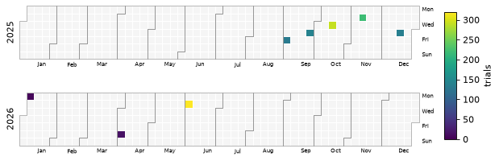
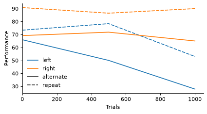
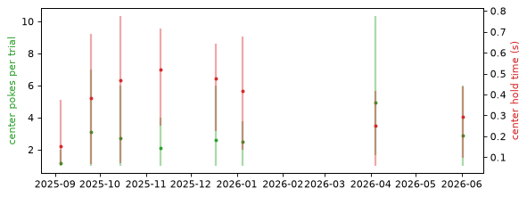
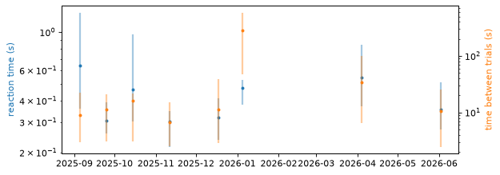
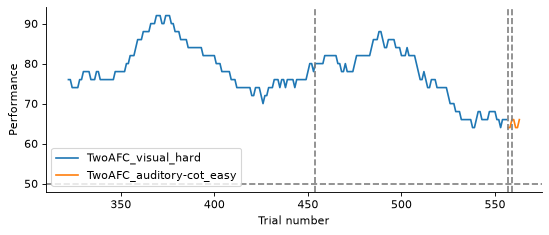
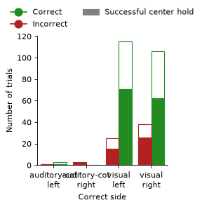
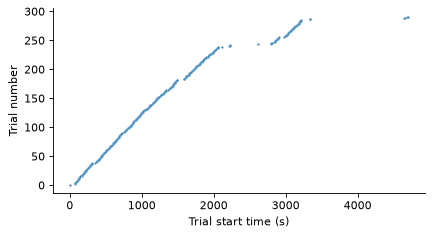
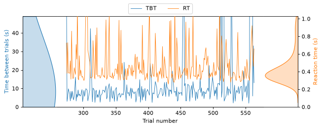
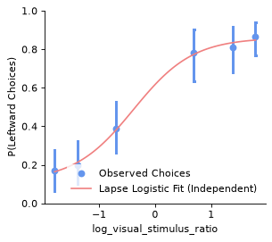
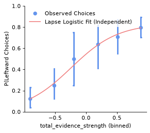

Gallery#
Every plot of the package, with the code that draws it. The images are drawn
from the example data in tests/data (one mouse, NUO003) by the current code
each time the documentation is built: the code under each image is the code
that drew it.
Each example uses three inputs. With your data:
from lecilab_behavior_analysis.io.loading import load_project_logs, load_project_trials
# the trials of a mouse, prepared for analysis (and its performance through trials)
trials = load_project_trials("COT_cannula_data", ["NUO003"])
# its trials of one day
day = trials[trials["year_month_day"] == "2025-10-15"]
# the sessions summaries of the project's setups (with the settings of each session)
_, summary, _ = load_project_logs("COT_cannula_data")
See also the tutorial, which goes through these step by step.
Ready-made figures#
Training history#
Everything about how a mouse trained, in one figure.

from lecilab_behavior_analysis.figures import subject_progress
fig, problems = subject_progress(trials, perf_window=100)
Session summary#
One day of a mouse: performance, choices, center port, timing.

from lecilab_behavior_analysis.figures import session_summary
fig, problems = session_summary(day, perf_window=50)
Training history#
Calendar of trials#
Trials per day, as a calendar.

from matplotlib import pyplot as plt
from lecilab_behavior_analysis.plots import calendar_plot
daily = trials.groupby("year_month_day").size()
daily.index = pd.to_datetime(daily.index)
years = daily.index.year.nunique()
fig, axes = plt.subplots(years, 1, figsize=(10, 1.6 * years), squeeze=False)
calendar_plot(daily, list(axes[:, 0])) # one row per year
Trials and water per day#
Trials of each session, by training stage, and water.

from matplotlib import pyplot as plt
from lecilab_behavior_analysis.plots import trials_by_day_stacked_plot, water_by_day_plot
sessions = (
trials.groupby(["year_month_day", "session", "current_training_stage"], sort=False)
.size()
.reset_index(name="trials")
)
sessions["day"] = pd.to_datetime(sessions["year_month_day"])
water = trials.groupby("year_month_day")["water"].sum()
water.index = pd.to_datetime(water.index)
fig, ax = plt.subplots(figsize=(8, 3))
trials_by_day_stacked_plot(sessions, ax=ax)
water_by_day_plot(water.sort_index(), ax)
Time of day of training#
When the mouse was in the box, as a 24-hour clock.

from matplotlib import pyplot as plt
from lecilab_behavior_analysis.metrics.occupancy import get_occupancy_heatmap, get_start_and_end_of_sessions_df
from lecilab_behavior_analysis.plots import plot_training_times_clock_heatmap
occupancy = get_start_and_end_of_sessions_df(trials)
heatmap = get_occupancy_heatmap(occupancy, window_size=30)
fig = plt.figure(figsize=(4, 4))
ax = fig.add_subplot(projection="polar")
plot_training_times_clock_heatmap(heatmap, ax=ax)
Performance through training#
Performance (rolling window) through all trials.

from matplotlib import pyplot as plt
from lecilab_behavior_analysis.metrics.performance import get_performance_through_trials
from lecilab_behavior_analysis.plots import performance_vs_trials_plot
df = get_performance_through_trials(trials, window=100)
fig, ax = plt.subplots(figsize=(8, 3))
performance_vs_trials_plot(df, ax=ax, legend=True)
Performance by trial type#
Performance in trials where the correct side repeats or alternates, and by side.

from matplotlib import pyplot as plt
import lecilab_behavior_analysis.data_format_changes as dfc
from lecilab_behavior_analysis.metrics.performance import (
get_performance_by_decision_df,
get_performance_through_trials,
get_repeat_or_alternate_performance,
)
from lecilab_behavior_analysis.plots import performance_by_decision_plot
df = get_performance_through_trials(trials, window=100)
df["correct"] = df["correct"].apply(dfc.correct_as_number) # timeouts count as errors
df = get_performance_by_decision_df(get_repeat_or_alternate_performance(df))
fig, ax = plt.subplots(figsize=(6, 3))
performance_by_decision_plot(df, ax=ax)
Center port by day#
Center pokes per trial and center hold time, mean and 95% CI.

from matplotlib import pyplot as plt
from lecilab_behavior_analysis.metrics.timing import get_center_hold_df
from lecilab_behavior_analysis.plots import mean_and_ci_by_day_plot
daily = get_center_hold_df(trials)
daily["day"] = pd.to_datetime(daily["year_month_day"])
fig, ax = plt.subplots(figsize=(8, 3))
mean_and_ci_by_day_plot(daily, "number_of_pokes", ax=ax, color="tab:green", label="center pokes per trial")
ax2 = ax.twinx()
mean_and_ci_by_day_plot(daily, "hold_time", ax=ax2, color="tab:red", label="center hold time (s)")
Reaction times by day#
Reaction time and time between trials, mean and 95% CI.

from matplotlib import pyplot as plt
from lecilab_behavior_analysis.metrics.timing import get_reaction_times_by_date_df
from lecilab_behavior_analysis.plots import mean_and_ci_by_day_plot
daily = get_reaction_times_by_date_df(trials)
daily["day"] = pd.to_datetime(daily["year_month_day"])
fig, ax = plt.subplots(figsize=(8, 3))
mean_and_ci_by_day_plot(daily, "reaction_time", ax=ax, color="tab:blue", ylog=True, label="reaction time (s)")
ax2 = ax.twinx()
mean_and_ci_by_day_plot(
daily, "time_between_trials", ax=ax2, color="tab:orange", ylog=True, label="time between trials (s)"
)
Settings and choices, session by session#
The proportion of left choices by correct side and difficulty in each session (a psychometric curve per session, as colours), with some settings of each session above it. One day is framed.

from matplotlib import pyplot as plt
from lecilab_behavior_analysis.io.settings import session_settings_table, settings_for_sessions
from lecilab_behavior_analysis.metrics.choices import get_choices_by_difficulty_matrix
from lecilab_behavior_analysis.plots import training_matrix_plot
p_left, n_trials, sessions = get_choices_by_difficulty_matrix(trials)
table = session_settings_table(summary, "NUO003") # the settings of each session
settings = settings_for_sessions(
table, p_left.columns, ["current_training_stage", "punishment", "hard_trials_on", "reward_amount_ml"]
)
fig, ax = plt.subplots(figsize=(10, 4.5))
training_matrix_plot(p_left, sessions, settings, highlight_day="2025-10-15", ax=ax)
One session#
Performance through the session#
Rolling performance, a dashed line at each session.

from matplotlib import pyplot as plt
from lecilab_behavior_analysis.metrics.performance import get_performance_through_trials
from lecilab_behavior_analysis.plots import performance_vs_trials_plot
df = get_performance_through_trials(day, window=50)
starts = df[df["session"] != df["session"].shift(1)].index
fig, ax = plt.subplots(figsize=(8, 3))
performance_vs_trials_plot(df, ax, legend=True, session_changes=starts, hue="current_training_stage")
Correct responses by side#
Correct and incorrect trials on each side.

from matplotlib import pyplot as plt
from lecilab_behavior_analysis.plots import number_of_correct_responses_plot
fig, ax = plt.subplots(figsize=(3, 3))
number_of_correct_responses_plot(day, ax)
Repeat or alternate#
Performance in trials where the correct side repeats the previous one, or alternates.

from matplotlib import pyplot as plt
import lecilab_behavior_analysis.data_format_changes as dfc
from lecilab_behavior_analysis.metrics.performance import (
get_performance_through_trials,
get_repeat_or_alternate_performance,
get_repeat_or_alternate_series,
)
from lecilab_behavior_analysis.plots import repeat_or_alternate_performance_plot
df = get_performance_through_trials(day, window=50)
df["correct"] = df["correct"].apply(dfc.correct_as_number)
df["repeat_or_alternate"] = get_repeat_or_alternate_series(df.correct_side)
df = get_repeat_or_alternate_performance(df, window=50)
fig, ax = plt.subplots(figsize=(8, 3))
repeat_or_alternate_performance_plot(df, ax)
Center pokes and hold time#
Histograms of the center pokes per trial and their duration.

from matplotlib import pyplot as plt
from lecilab_behavior_analysis.plots import plot_number_of_pokes_histogram, plot_port_holding_time_histogram
fig, (left, right) = plt.subplots(1, 2, figsize=(7, 3))
plot_number_of_pokes_histogram(day, port_number=2, ax=left)
plot_port_holding_time_histogram(day, port_number=2, ax=right)
When each trial started#
Trial number against the time since the session started.

from matplotlib import pyplot as plt
from lecilab_behavior_analysis.metrics.timing import adjust_trials_and_time_of_start_to_first_session
from lecilab_behavior_analysis.metrics.trial_events import add_time_from_session_start
from lecilab_behavior_analysis.plots import plot_trial_time_of_start
df = adjust_trials_and_time_of_start_to_first_session(add_time_from_session_start(day.copy()))
fig, ax = plt.subplots(figsize=(6, 3))
plot_trial_time_of_start(df, ax=ax)
Reaction time and time between trials#
Trial by trial through the session, with their distributions on the sides.

from matplotlib import pyplot as plt
from lecilab_behavior_analysis.plots import time_between_trials_and_reaction_time_plot
fig, axes = plt.subplots(1, 3, figsize=(9, 3), gridspec_kw={"width_ratios": [1, 6, 1], "wspace": 0})
time_between_trials_and_reaction_time_plot(day, axes)
Choices and psychometric curves#
Psychometric curve: visual#
Left choices against the brightness ratio of the ports (positive: left brighter), with a lapse logistic fit.

from matplotlib import pyplot as plt
from lecilab_behavior_analysis.metrics.choices import get_performance_by_difficulty_ratio
from lecilab_behavior_analysis.plots import psychometric_plot
visual = day[(day["stimulus_modality"] == "visual") & (day["task"] != "Habituation")]
df = get_performance_by_difficulty_ratio(visual)
fig, ax = plt.subplots(figsize=(4, 3.5))
psychometric_plot(df, x="visual_stimulus_ratio", y="first_choice_numeric", ax=ax, valueType="discrete")
Psychometric curve: cloud of tones#
Left choices against the evidence of the cloud of tones (6 bins), with a lapse logistic fit.

from matplotlib import pyplot as plt
from lecilab_behavior_analysis.metrics.choices import get_performance_by_difficulty_ratio
from lecilab_behavior_analysis.plots import psychometric_plot
cot_day = trials[trials["year_month_day"] == "2025-11-11"] # cloud of tones, easy to hard
cot = cot_day[cot_day["stimulus_modality"] == "auditory-cot"]
df = get_performance_by_difficulty_ratio(cot)
fig, ax = plt.subplots(figsize=(4, 3.5))
psychometric_plot(df, x="total_evidence_strength", y="first_choice_numeric", ax=ax, valueType="continue")
Choices by side and difficulty#
Left choices for each correct side and difficulty (when there is no stimulus value to plot against).

from matplotlib import pyplot as plt
from lecilab_behavior_analysis.metrics.trial_events import (
side_and_difficulty_to_numeric,
transform_side_choice_to_numeric,
)
from lecilab_behavior_analysis.plots import choice_by_difficulty_plot
df = day[day["task"] != "Habituation"].copy()
df["first_choice_numeric"] = df["first_choice"].apply(transform_side_choice_to_numeric)
df["side_difficulty"] = df.apply(side_and_difficulty_to_numeric, axis=1)
fig, ax = plt.subplots(figsize=(4, 3.5))
choice_by_difficulty_plot(df, ax=ax)
Bias evolution#
Repeat / alternate and left / right bias through training.

from matplotlib import pyplot as plt
from lecilab_behavior_analysis.metrics.choices import get_bias_evolution_df, points_to_lines_for_bias_evolution
from lecilab_behavior_analysis.plots import plot_decision_evolution_triangle
df = trials[["subject", "total_trial", "roa_choice_numeric"]].copy()
group_size = max(len(df) // 40, 1)
df["trial_group"] = df["total_trial"] // group_size * group_size
evolution = points_to_lines_for_bias_evolution(
get_bias_evolution_df(df, groupby="trial_group"), groupby="trial_group"
)
fig, ax = plt.subplots(figsize=(4, 4))
plot_decision_evolution_triangle(evolution, ax=ax, hue="trial_group")
Project overview#
Performance of every mouse#
Performance through trials of every mouse of a project (interactive; long histories are grouped).
from lecilab_behavior_analysis.reports import overview
fig = overview.performance_over_trials_figure(trials, window=50, max_points=1000)
Trials and performance per day#
Trials and performance of each mouse, day by day.

from lecilab_behavior_analysis.reports import overview
fig = overview.cohort_trials_and_performance_figure(trials)
Box occupancy#
When the box was used, day by day.

from lecilab_behavior_analysis.reports import overview
fig = overview.box_occupancy_figure(trials)